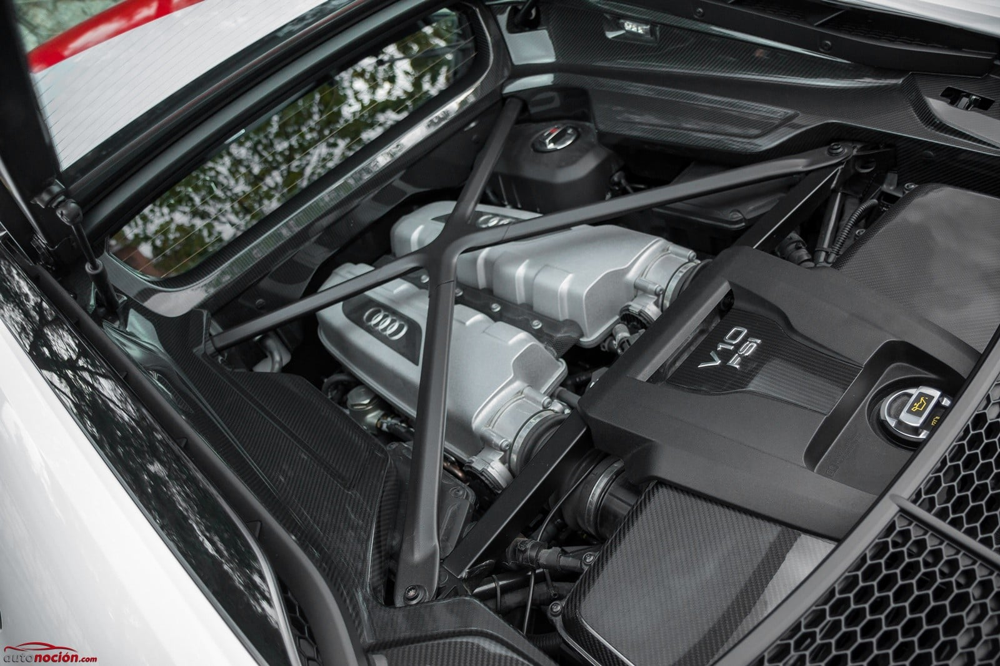

Review Bugatti Tourbillon


L'Audi R8 és un dels superesportius més reconeguts del món, una combinació perfecta de tecnologia avançada, luxe i potència desbordant. Des del seu debut el 2006, aquest model ha estat un emblema de la marca alemanya, destacant per un disseny icònic i un rendiment capaç de competir amb els millors del sector. Tant si es tracta de la carretera com de la pista, l'Audi R8 ofereix una experiència única que captiva tots els sentits.
Motor i Rendiment: Una Simfonia V10
El cor de l'Audi R8 és el seu motor atmosfèric V10 de 5.2 litres, una joia mecànica que ofereix una potència que oscil·la entre els 570 i els 620 cavalls, segons la versió. Aquesta potència permet accelerar de 0 a 100 km/h en només 3,1 segons (versió Performance) i aconseguir una velocitat màxima de més de 330 km/h.
El motor, situat al mig, no només ofereix un rendiment brutal, sinó també una simfonia de so que fa posar la pell de gallina. A més, l'R8 està equipat amb el sistema de tracció total Quattro, que distribueix la potència a totes les rodes per garantir una adherència i estabilitat excepcionals, independentment de les condicions de la carretera.
Interior: Luxe Minimalista i Tecnologia a l’Abast
A l’interior, l'Audi R8 ofereix un entorn dissenyat per al conductor. El volant multifunció amb controls integrats i les lleves de canvi permeten mantenir les mans sempre al lloc correcte. L’habitacle combina materials premium com cuir, Alcantara i fibra de carboni, oferint un ambient d’alt nivell.
Preu i Competidors
L’Audi R8 té un preu base que ronda els 200.000 euros, posicionant-se com una alternativa més assequible a superesportius com el Lamborghini Huracán (amb qui comparteix plataforma) o el Ferrari F8 Tributo. Tot i això, ofereix una experiència de conducció igualment emocionant, combinada amb la qualitat i fiabilitat típiques d’Audi.
Conclusió
L’Audi R8 és un superesportiu que combina el millor dels dos mons: rendiment d’alt nivell i un disseny que exhala luxe i elegància. És un cotxe que pot fer-te somriure tant a la carretera com a la pista, gràcies al seu motor V10, la seva tecnologia avançada i la seva conducció refinada. Si busques un superesportiu que sigui tan funcional com espectacular, l'Audi R8 és una opció pràcticament imbatible.